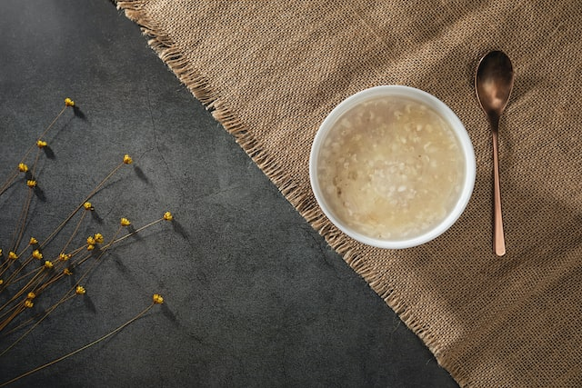

Photo by Charles Chen on Unsplash
Description
This recipe is adapted from Trine Theut and from Över Öppen Eld Vikingatida
Recept (Over an Open Fire Viking Age Recipes), with modifications.
Makes about 4 to 6 servings.
Ingredients
- 10-15 cups of water
- 2 cups of chopped barley kernels, soaked overnight in cold water
- A handful of whole grain wheat flour
- A handful of crushed hazelnuts
- 3-4 tablespoons of honey
- Salt to taste
Steps
- Place ingredients in a large pot.
- Pour 10 cups of water into the pot and heat to a rolling boil.
- Stir regularly, reducing heat to maintain a low boil.
- Add water if the mixture starts getting too thick.
- Cook until done, about an hour.
- 15-20 minutes before porridge is done, add a cup of chopped fruit if you like.
- Serve with fresh cream or butter for a richer porridge.
Return to top
Return to home page